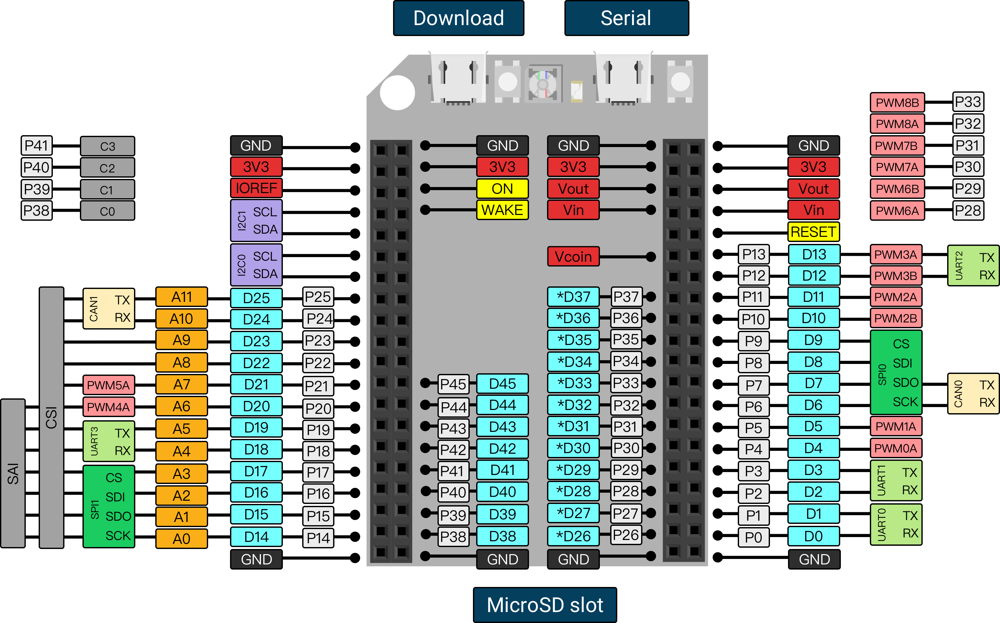

What is SwiftIO
What is Swift Programming Language?

Swift is a powerful, efficient and safe programming language. It is easy to learn and it looks more like English text.
Swift was introduced at Apple's 2014 WWDC. Apple aims to use Swift code to create apps on iPhone, Mac and beyond. But now we can do more with it.
The Swift programming language absorbs many other languages’ features without affecting the real-time performance of the embedded system. It is one of the few modern languages suitable for industrial microcontroller programming.
What is microcontroller?
A Microcontroller is a circuit board with a chip on it that can be programmed to do many different things. They can run small, simple software programs.
A small computer processor is mounted on the board with a bunch of other components that handle the input and the output. You can read information from sensors, for instance, if you want the board to read temperature in your room, you can use a temperature sensor to know that.

What is SwiftIO?
MadMachine is the project name, it is also the team that designs and makes circuit boards that run swift source code on microcontrollers. Currently, there is only one type of board, SwiftIO board. You can use it to control motors, lighting, cameras, or even build a simple robot.

However, the magic of SwiftIO board is not just in the language or its ability to run on microcontrollers, but the fact that the combination of Swift and hardware has just potentially taken IoT projects to a new level. SwiftIO board has huge potential to make microcontroller projects easier than ever before.
There’s also the MadMachine IDE, which makes SwiftIO good for beginners. The MadMachine software works on Windows and Mac, which makes downloading your swift code as simple as connecting a USB cable and clicking a button. Without it, if you want to program microcontrollers, you’d have to type out a lot of binary and memorize a lot of hard to remember registers and instructions. Then you’d have to use special programming hardware with custom made cables to download your program onto your microcontroller.
This is the comparison between Arduino, MicroPython, and MadMachine.

This is the PINOUT diagram of SwiftIO. Let’s take a quick tour.

- Microcontroller RT1052 with ARM cortex M7 core 600 Mega Hz.
- Reset button: reboot your SwiftIO’s program.
- Download button: download your code.
- Power related pins: power and ground pins.
- Communication interfaces: send and receive data from different modules, like GPS module, Bluetooth module, Wi-Fi modules and so on.
- 46 digital pins: output 3.3V for a digital 1, or 0V for a digital 0.
- 12 analog input pins: measure continuous voltages anywhere from 0V to 3.3V.
- 14 PWM pins: output pulse width modulated square waves, which normally applied in motor controlling and buzzer.
SwiftIO board puts all those things together in an easy to use way. If you want to learn more about electronics, you can discover more in the future with us.